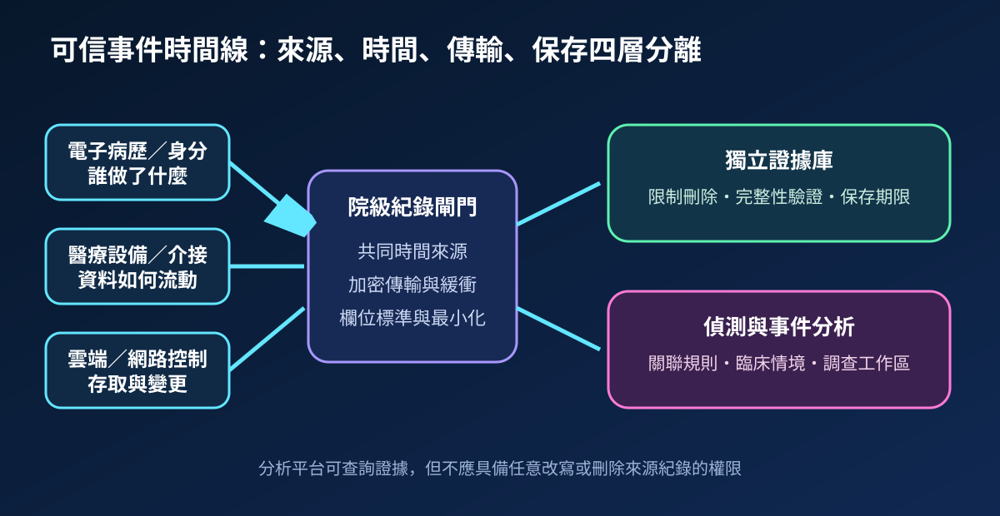
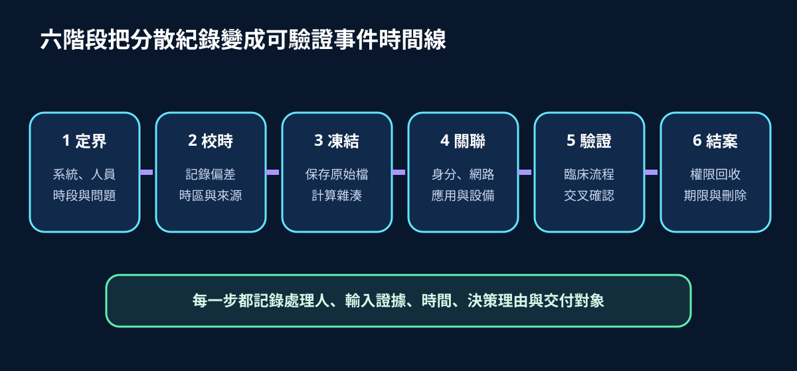
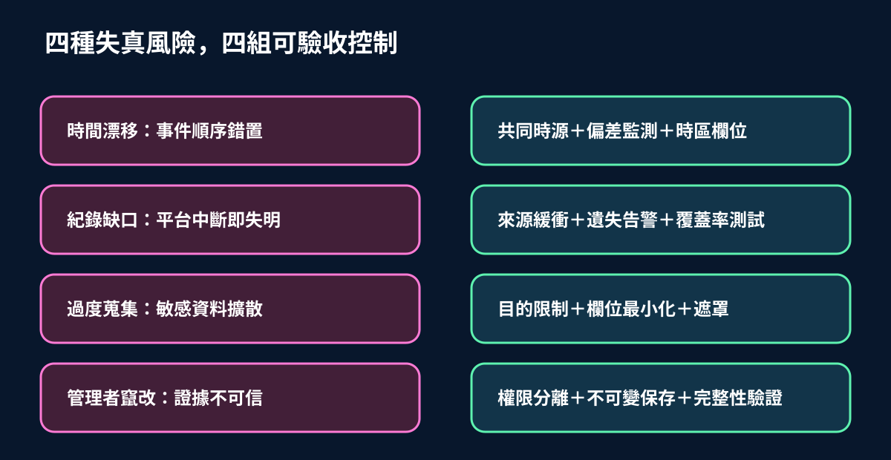

醫療資安國際觀察 · 2026-10-27
醫療稽核紀錄如何形成可信事件時間線：從時鐘同步到證據保全
作者：Dr. William｜醫療資訊與資安治理實務工作者
醫療事件調查不只需要「有日誌」，還要證明不同系統的時間可比對、原始紀錄未被改寫、查閱與匯出受到控制，並能把技術活動連回臨床流程。
名詞解釋：稽核紀錄、時間偏差與證據鏈
稽核紀錄記載身分驗證、資料查閱、權限變更、系統操作及設備事件。時間偏差是各來源時鐘與共同基準的差距；偏差未被記錄時，事件先後順序可能被誤判。證據鏈則記錄原始資料由誰取得、如何驗證完整性、何時分析及交付給誰。集中收集不等於可信，仍須管理來源覆蓋、傳輸中斷、管理權限、保存期限與敏感欄位。
國際現況與適用邊界
英國 NCSC 於 2026 年 1 月更新 Cyber Assessment Framework，將監測、日誌、事件識別與資料品質納入可衡量的資安成果。NIST Cybersecurity Framework 2.0 於 2025 年 11 月修訂，持續以 Detect、Respond、Recover 等功能連結事件資料、分析與治理；CISA 的事件日誌最佳實務則強調集中存取、適當保存、時間同步與偵測可用性。這些資料提供治理與技術參考，並不直接構成台灣醫療機構的法定保存期間、病歷存取或個資處理義務。
台灣適用原則：院內導入時，應依台灣法令、主管機關要求、病歷與個資規範、契約及事件處理程序決定蒐集目的、欄位、保存期間與揭露對象。國外框架可用於設計控制與驗收，但不可直接把外國要求改寫成台灣義務。
規劃：從調查問題反推紀錄需求
範圍宜先涵蓋電子病歷、身分平台、特權存取、醫療設備閘道、介接引擎、雲端控制面、端點與網路邊界。每類來源需定義事件擁有者、必要欄位、時間來源、允許偏差、傳輸方式、緩衝能力、保存區、查閱角色與刪除規則。驗收指標可包含來源覆蓋率、時間偏差超標率、傳輸遺失率、無主紀錄數、完整性驗證成功率、調查查詢時間及逾期刪除完成率。
實作：六階段建立事件時間線
- 定界：確認要回答的事件問題、相關系統、人員、臨床服務與時段。
- 校時：保留時區、時間來源及已知偏差，不任意覆寫原始時間。
- 凍結：保存原始匯出、計算完整性摘要並限制後續刪改。
- 關聯：以身分、工作階段、裝置、網路位置與交易識別碼連結事件。
- 驗證：用臨床流程、工單、存取核准及其他獨立來源交叉確認。
- 結案：記錄判定、限制調查副本、回收權限，並依期限保存或刪除。

風險：更多紀錄不一定代表更高可信度
時間漂移會顛倒事件順序；傳輸或平台中斷會形成調查盲區；過度蒐集會擴大病人與員工資料暴露；分析者兼具刪除權限則會削弱證據可信度。控制重點是共同時源與偏差監測、來源端緩衝及遺失告警、目的限制與欄位最小化，以及證據庫與分析平台的權限分離。若系統無法提供完整紀錄，應記錄限制與信心水準，不以推測填補缺口。

可執行清單
- 高影響系統是否有明確的紀錄擁有者、必要事件與必要欄位？
- 所有時間戳是否保留時區、時間來源及可監測的偏差？
- 收集平台中斷時，來源端是否可緩衝並對遺失提出告警？
- 原始證據庫是否與分析平台分離管理、限制刪除並驗證完整性？
- 紀錄內容是否遵循目的限制、欄位最小化、遮罩與保存期限？
- 抽樣演練是否能在目標時間內重建跨系統事件並連回臨床影響？
來源
- UK NCSC｜Cyber Assessment Framework（更新：2026-01-30；查閱：2026-10-27）
- NIST｜Cybersecurity Framework 2.0（修訂：2025-11；查閱：2026-10-27）
- CISA｜Best Practices for Event Logging and Threat Detection（發布：2024-08-21；查閱：2026-10-27）
內容說明
本文依健康台灣深耕計畫相關治理內容整理，並參考英國 NCSC、NIST 與 CISA 公開資料，提出醫療稽核紀錄的來源覆蓋、時間同步、完整性驗證、權限分離、資料最小化與事件時間線驗收方法；不把外國框架視為台灣法定義務，也不取代主管機關公告、院內病歷與個資程序、事件應變規範或法律意見。